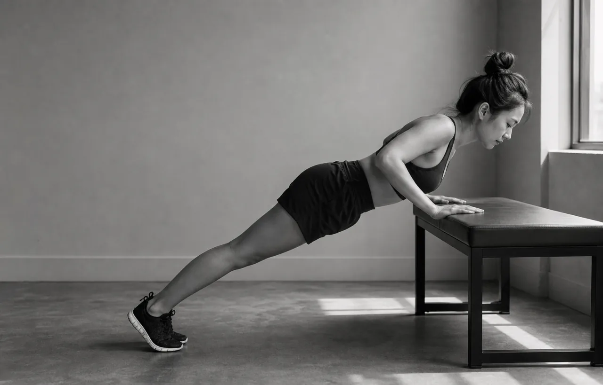
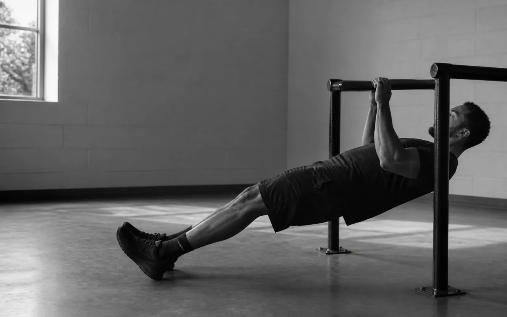
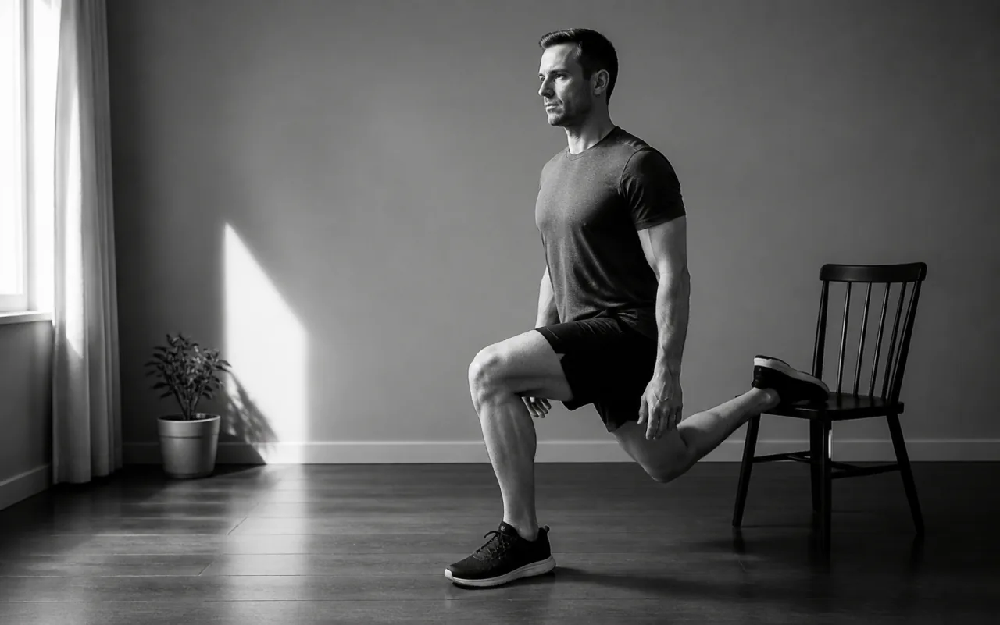
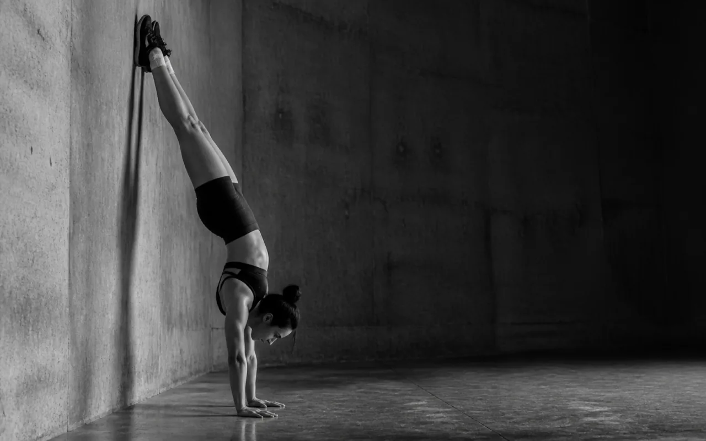
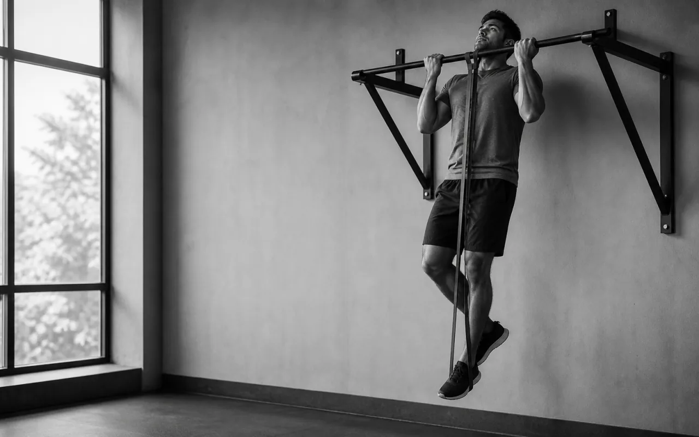
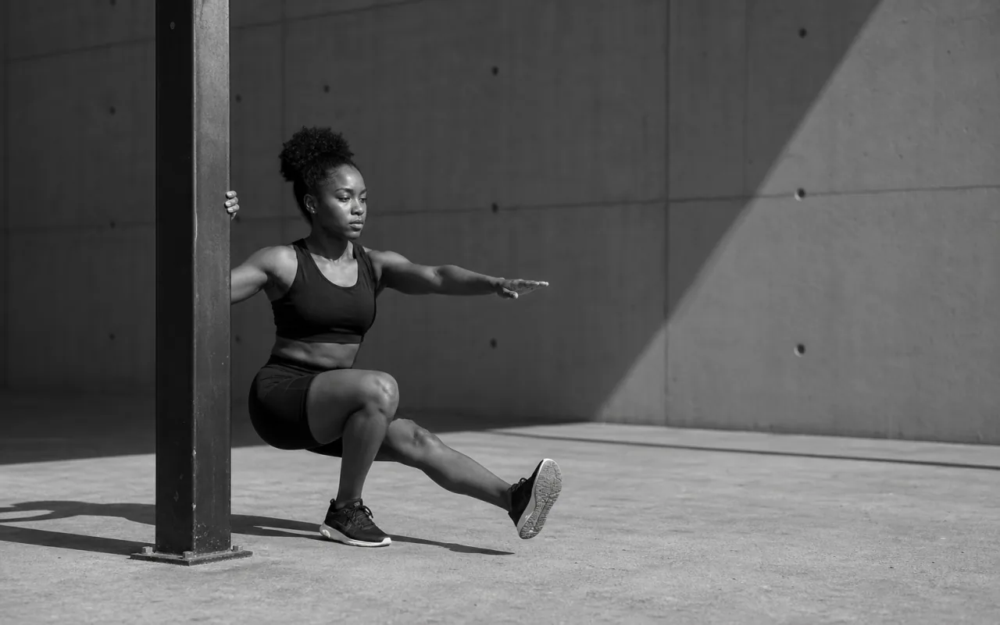
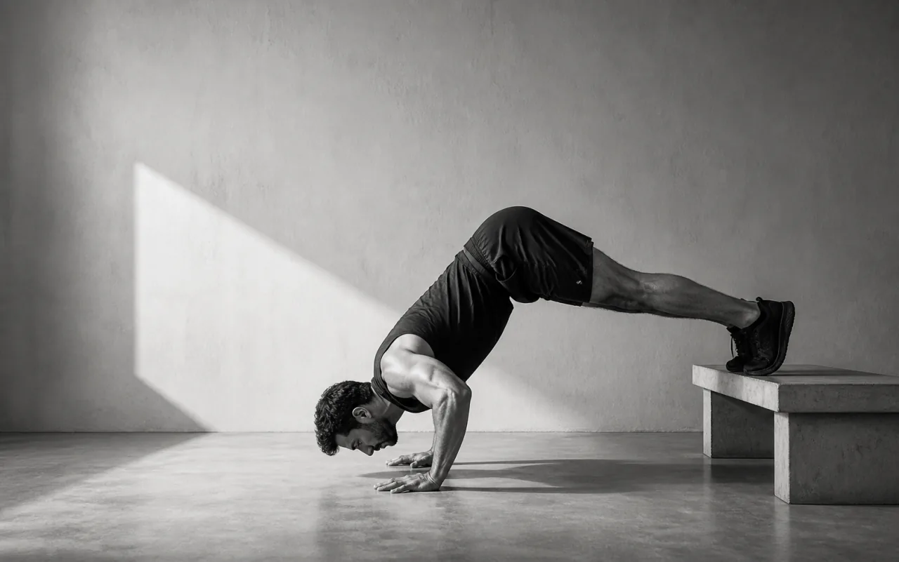
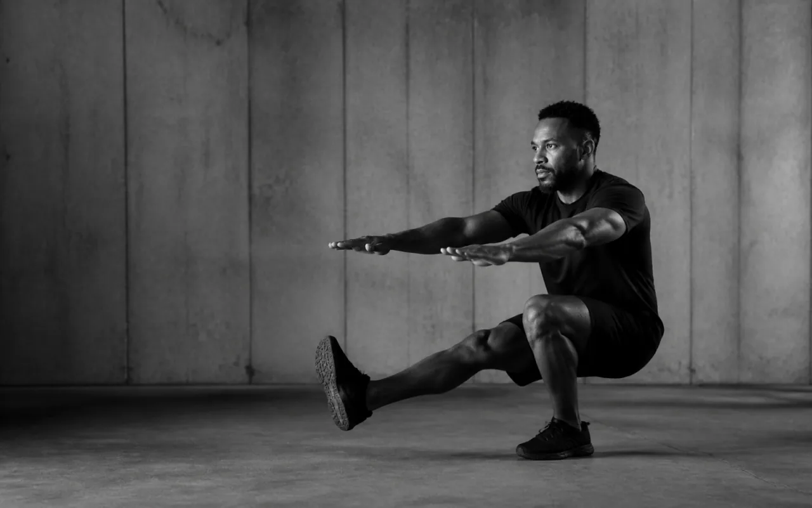

The program
24 weeks, three days a week, starting on your living room floor
This is the actual plan. Three full-body sessions a week, about 60 minutes each, with a rest day between every one. Phase 1 needs nothing but the floor. Phase 2 assumes you've added a pull-up bar. Phase 3 is where it starts getting fun.
On this page
The six rules that make this work
- Pick your rung from the ladders, not from ego. The correct rung is the one where the bottom of the rep range is genuinely hard and the top is currently out of reach. If you can already do the top of the range, move up. If you can't hit the bottom with clean form, move down.
- Use double progression. Add reps until every set hits the top of the range, then move up a rung and reset to the bottom. That's the whole progression mechanism, forever.
- Stop 2–3 reps short of failure on everything except the final set of each exercise, where 1 RIR is fine. Weeks 1–2, stop 4 short. You are building tendons, not testing yourself.
- Rest 2–3 minutes between hard sets. Use the pairings (A1/A2) so you're never idle: do A1, rest 90 s, do A2, rest 90 s, back to A1. Each muscle still gets three full minutes.
- Log every set, every session. Exercise, rung, reps per set, and how it felt. The tracker does this. Without a log there is no progressive overload, only guessing.
- Never skip the warm-up, and never skip legs. These are the two things beginners cut when short on time, and they are the two that cost the most.
Phase 1 — Onramp · weeks 1–4 · floor only
Goal: build the habit, learn the six patterns, condition your connective tissue, and establish a logbook. You should finish every session in weeks 1–2 feeling like you could have done more. That is intentional. The volume ramps: week 1 do 2 sets of everything, week 2 do 3, weeks 3–4 do the full sets listed.

Session A — Push emphasis
| Exercise | Sets × reps | Rest |
|---|---|---|
| Warm-up · 8 min | ||
| Jog in place / jumping jacks | 3 min | — |
| Wrist prep + shoulder prep | 1 round | — |
| Scapular push-ups | 2 × 10 | 30 s |
| Skill · 8 min | ||
| Plank → pike hold → wall walk | 4 × 30 s | 60 s |
| Main · 32 min | ||
| A1. Push-up (your rung) | 4 × 6–12 | 90 s |
| A2. Towel/table row | 4 × 8–12 | 90 s |
| B1. Pike push-up | 3 × 6–10 | 90 s |
| B2. Bulgarian split squat | 3 × 8–12 /leg | 90 s |
| Core & finish · 10 min | ||
| Hollow hold (your rung) | 3 × 20–45 s | 60 s |
| Standing calf raise | 2 × 20–25 | 60 s |
| Log the session | 2 min | — |

Session B — Pull emphasis
| Exercise | Sets × reps | Rest |
|---|---|---|
| Warm-up · 8 min | ||
| General warm-up + wrist & shoulder prep | — | — |
| Band pull-aparts | 2 × 15 | 30 s |
| Skill · 8 min | ||
| L-sit progression (floor or books) | 5 × 15–20 s | 60 s |
| Main · 32 min | ||
| A1. Table / inverted row | 4 × 8–12 | 90 s |
| A2. Bench dip | 4 × 8–15 | 90 s |
| B1. Push-up (one rung easier than A day) | 3 × 8–12 | 90 s |
| B2. Sliding leg curl or single-leg glute bridge | 3 × 10–15 | 90 s |
| Core & finish · 10 min | ||
| Lying leg raise | 3 × 10–15 | 60 s |
| Side plank | 2 × 30–45 s /side | 45 s |
| Log the session | 2 min | — |

Session C — Legs & full body
| Exercise | Sets × reps | Rest |
|---|---|---|
| Warm-up · 8 min | ||
| General + lower body prep (leg swings, deep squat hold, ankle rocks) | — | — |
| Glute bridge | 2 × 15 | 30 s |
| Skill · 8 min | ||
| Wall walk / chest-to-wall hold | 5 × 20–30 s | 60 s |
| Main · 32 min | ||
| A. Split squat / Bulgarian split squat | 4 × 8–12 /leg | 2 min |
| B1. Push-up (your rung) | 3 × 6–12 | 90 s |
| B2. Towel / table row | 3 × 8–12 | 90 s |
| C. Single-leg glute bridge or Nordic negative | 3 × 8–15 | 90 s |
| Core & finish · 10 min | ||
| Dead bug | 3 × 10 /side | 45 s |
| Superman hold | 2 × 30 s | 45 s |
| Single-leg calf raise | 2 × 15 /leg | 45 s |
Phase 2 — Foundation · weeks 5–12 · bar required
Goal: your first pull-up, your first full-range push-ups for real sets, and a chest-to-wall handstand hold. This is where the physique change starts to become visible.
The structure is the same; the vertical pull replaces some rowing volume, dips move to a bar if you have one, and skill work gets more specific.

Session A — Push emphasis
| Exercise | Sets × reps |
|---|---|
| Warm-up + wrist/shoulder prep | 8 min |
| Skill: chest-to-wall handstand hold | 5 × 20–40 s |
| A1. Push-up rung | 4 × 6–12 |
| A2. Pull-up rung (negatives / band / full) | 4 × 3–8 |
| B1. Pike push-up rung | 3 × 6–10 |
| B2. Inverted row | 3 × 8–12 |
| C. Bulgarian split squat | 3 × 8–12 /leg |
| Hollow hold rung | 3 × 30–45 s |
| Dead hang (grip work) | 2 × max |

Session B — Pull emphasis
| Exercise | Sets × reps |
|---|---|
| Warm-up + band pull-aparts | 8 min |
| Skill: L-sit progression | 5 × 15–20 s |
| A1. Chin-up rung (underhand — easier, builds the pull-up) | 4 × 3–8 |
| A2. Dip rung | 4 × 5–12 |
| B1. Feet-elevated inverted row | 3 × 8–12 |
| B2. Push-up (one rung easier) | 3 × 8–12 |
| C. Sliding leg curl / Nordic negative | 3 × 6–12 |
| Hanging knee raise | 3 × 10–15 |
| Side plank | 2 × 45 s /side |

Session C — Legs & skill
| Exercise | Sets × reps |
|---|---|
| Warm-up + lower body prep | 8 min |
| Skill: wall walk, kick-up practice, heel pulls | 10 min |
| A. Pistol progression (box / assisted / shrimp) | 4 × 6–10 /leg |
| B1. Pull-up or chin-up rung | 3 × 3–8 |
| B2. Pike push-up rung | 3 × 6–10 |
| C1. Shoulder-elevated hip thrust | 3 × 12–15 |
| C2. Archer or feet-elevated row | 3 × 8–12 |
| Single-leg calf raise | 3 × 15–20 /leg |
| Hollow rock | 3 × 15–20 |
Phase 3 — Build · weeks 13–24
Goal: pull-ups and dips for real sets, wall handstand push-ups, pistol squats, and your first L-sit. Same three-day structure, but three things change:
- Sets go up to 4–5 on the two main lifts of each session. Total weekly sets per muscle move toward 14–18.
- Add external load where a rung is stalling. A backpack with 15–25 lb of books turns a stalled push-up or dip into a productive one and is far better than chasing an exotic variation. See Gear Tier 2.
- Skill blocks get longer and more specific — 12 minutes, with an explicit target (30-second free handstand, 15-second L-sit, 20-second tuck front lever).


| Slot | Session A · Push | Session B · Pull | Session C · Legs & skill |
|---|---|---|---|
| Skill (12 min) | Freestanding handstand work | L-sit → tuck front lever | Handstand + kick-up + bail practice |
| A1 | Weighted or decline push-up · 4×6–10 | Pull-up (weighted if 10+) · 5×5–8 | Pistol / shrimp squat · 4×5–8 /leg |
| A2 | Pull-up · 4×5–8 | Dip (weighted if 12+) · 5×6–10 | Chin-up · 4×5–8 |
| B1 | Wall handstand push-up · 4×4–8 | Archer / tuck-lever row · 4×6–10 | Feet-elevated pike push-up · 3×6–10 |
| B2 | Feet-elevated row · 4×8–12 | Deficit or archer push-up · 4×6–10 | Inverted row · 3×10–12 |
| C | Bulgarian split squat (weighted) · 3×8–12 /leg | Nordic curl negative · 3×5–8 | Hip thrust / single-leg RDL · 3×12–15 |
| Core | Full hollow hold · 3×45 s | Hanging leg raise · 3×10–12 | Hollow rock + side plank |
| Finish | Dead hang · 2×max | Calf raise · 3×20 | Superman + tibialis raise |
Week-by-week calendar
| Week | Phase | Sets on main lifts | Effort | Focus / milestone check |
|---|---|---|---|---|
| 1 | Onramp | 2 | 4 RIR — easy | Baseline test + photos + measurements. Learn the movements. |
| 2 | Onramp | 3 | 3–4 RIR | Soreness should already be dropping. Order your bar if you haven't. |
| 3 | Onramp | 4 | 2–3 RIR | First real progressive-overload week. Beat week 2's reps. |
| 4 | Onramp | 4 | 2–3 RIR | Weigh in. Reassess every rung. Bar should be up by now. |
| 5 | Foundation | 4 | 2–3 RIR | Pull-up ladder begins. Start grease-the-groove hangs. |
| 6 | Deload | 2 | 5 RIR | Half the sets, half the effort. Skill work only, no failure. |
| 7–8 | Foundation | 4 | 2 RIR | Push hard. Most people's first chin-up lands around here. |
| 9–11 | Foundation | 4 | 1–2 RIR | Week 9: repeat the baseline test. Compare to week 1. |
| 12 | Deload | 2 | 5 RIR | Retest, re-measure, retake photos. 3-month checkpoint. |
| 13–17 | Build | 4–5 | 1–2 RIR | Add load where you've stalled. Handstand comes off the wall. |
| 18 | Deload | 2 | 5 RIR | Reassess bodyweight trend — adjust calories if gaining too fast. |
| 19–23 | Build | 4–5 | 1–2 RIR | Front lever tucks if prerequisites are met. Muscle-up prep. |
| 24 | Deload + test | 2 | Test day | Full retest, photos, measurements. 6-month checkpoint. |
How to actually run a session
- Before you start: open your log from last time. Write down the exact numbers you're trying to beat today. Do not train without a target — "see how it goes" is how weeks disappear.
- Warm up properly. 5 minutes general, 3 minutes specific. Then do one easy set of your first exercise at about half the reps.
- Skill work while fresh. Short sets, long rests, never near failure. If your handstand holds are getting worse rather than better within the block, the block is over — move on.
- Main lifts in pairs. A1, rest 90 s, A2, rest 90 s, A1… Set a timer; don't eyeball it.
- Write each set down as you finish it. Not at the end from memory. Note anything unusual: bad sleep, a tweaky elbow, a rep that felt great.
- Finish with core and accessories at shorter rests, then two minutes of easy stretching for whatever you just worked.
- Eat within a couple of hours with 30–40 g of protein. The old 30-minute "anabolic window" is a myth, but total daily protein absolutely is not.
Deload weeks — weeks 6, 12, 18, 24
A deload is a planned easy week. Fatigue from training accumulates faster than you notice; a deload lets it dissipate so the next block starts fresh, and it gives tendons and joints — which adapt far more slowly than muscle — a chance to catch up.
How to deload: keep the same exercises and the same rungs, but cut sets roughly in half and stop 4–5 reps short of failure on everything. Keep skill practice (it's low fatigue and high value). Do not take the week completely off — total rest loses more than it gains, and it breaks the habit.
| Signal | Meaning |
|---|---|
| Reps declining for 2+ sessions across multiple exercises | Accumulated fatigue. Deload now, don't wait for week 6. |
| Joints ache before you even start warming up | Connective tissue hasn't caught up. Deload and reassess your rungs. |
| Resting heart rate up 5+ bpm for several days | Systemic fatigue or you're getting sick. |
| Dreading sessions you used to look forward to | Real and predictive. Deload. |
| Sleep getting worse despite being tired | Classic overreaching sign. |
Cardio and conditioning
You are trying to gain weight, so you don't want to burn enormous amounts of energy. But some cardio is genuinely valuable: it improves recovery between sets and sessions, it's strongly protective for long-term health, and at these doses it will not interfere with muscle gain.
| Type | Dose | When | Why |
|---|---|---|---|
| Zone 2 (easy) — brisk walk, easy bike, easy jog where you can hold a conversation | 2–3 × 25–40 min/week | Rest days or after training | Builds the aerobic base that determines how fast you recover between sets. Very low interference with strength. |
| Daily walking | 7,000–10,000 steps | Throughout the day | Health, appetite regulation, and it keeps a lean bulk lean. Costs nothing in recovery. |
| Intervals / sprints | Optional, 1 × 10–15 min/week max | Not the day before or after leg-heavy sessions | Good conditioning, but expensive in recovery and it competes directly with leg training. Optional for a beginner. |
| Long runs (5+ miles) | Not while bulking | — | High interference with strength and a big calorie sink. Revisit later if you want to run. |
When life interferes
| Situation | What to do |
|---|---|
| Missed one session | Nothing. Do it the next day, or skip it and continue. Do not double up. |
| Missed a whole week | Resume at the same rungs but cut one set for the first week back. You lose almost nothing in a week. |
| Missed 2–4 weeks | Repeat the last week you completed at 2–3 sets and 4 RIR, then resume. Expect soreness. Strength returns much faster than it was built. |
| Only have 20 minutes | Do the minimum effective session: 3 sets of your push rung, 3 sets of your pull rung, 3 sets of Bulgarian split squats, all supersetted with 60 s rest. That is 80% of the benefit in a third of the time. |
| Sick — symptoms above the neck (runny nose, sore throat) | Train at reduced intensity if you feel up to it. Cut sets in half. |
| Sick — symptoms below the neck (fever, chest, body aches, GI) | Do not train. Rest until you're a full day symptom-free, then resume at deload volume. |
| Still very sore from last session | Train anyway but reduce sets — light movement usually reduces soreness. If it's severe enough to change your form, swap in a different pattern for that day. |
| Traveling with no space or gear | Push-ups, split squats, hollow holds, table rows, and a doorway towel row cover every pattern in a hotel room. Keep the habit even at reduced quality. |
| Terrible sleep last night | Train, but drop to 3 RIR and skip the last set of each exercise. Don't try to set records on 5 hours of sleep. |
What comes after week 24
By week 24 you should be doing sets of strict pull-ups and dips, holding a wall handstand, and squatting on one leg. At that point you are no longer a beginner and the linear "add a rep every week" approach starts to sputter. Three sensible directions:
- Weighted basics. Keep the same three-day structure and just add weight to pull-ups, dips, and push-ups. Boring, and by far the most reliable way to keep getting bigger and stronger.
- Skill specialization. Pick one goal — freestanding handstand, muscle-up, front lever — and give it a dedicated block with the basics on maintenance volume (about half your current sets).
- Add a fourth day. An upper/lower or push/pull/legs/skill split, if 3 days is no longer enough stimulus and your recovery is genuinely good.
What you should not do is switch to a completely different program because progress slowed. Slowing down after six months is not a sign the program failed. It's a sign it worked, and you're now a more advanced trainee for whom progress is simply slower. That is permanent, and it happens to everyone.